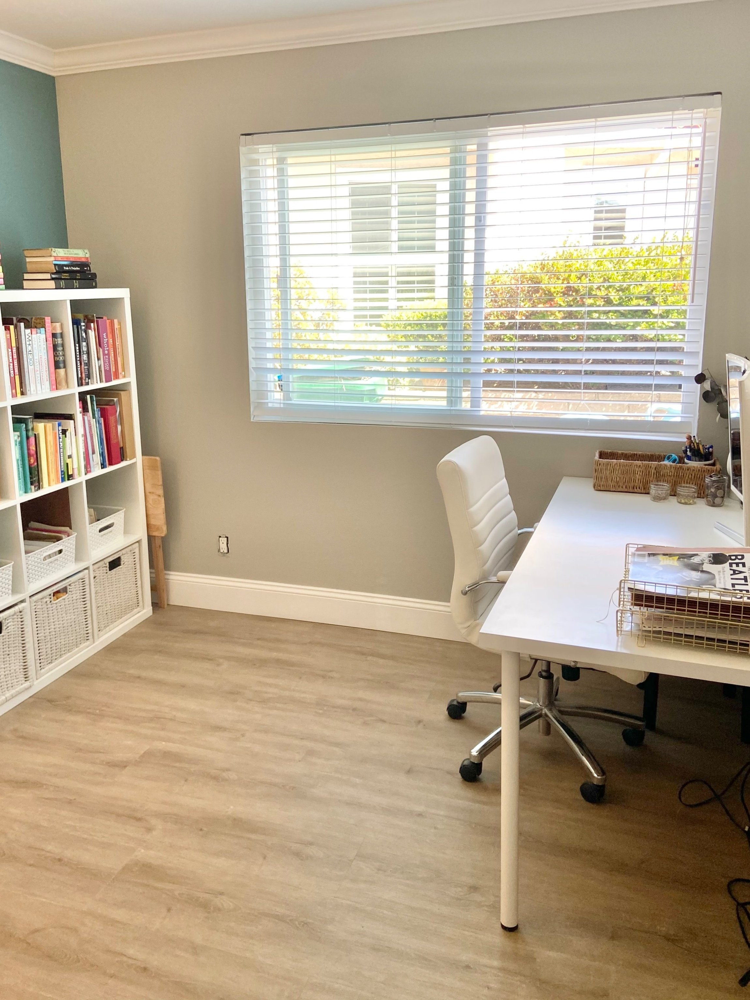

The Joy of Decluttering: Why Purging Feels So Good
In our fast-paced lives, it's easy for our homes to become cluttered with items we no longer need or love. But have you ever noticed how incredibly satisfying it feels to purge and get rid of these unnecessary belongings? Whether it's that old sweater you never wear or the stack of magazines collecting dust, decluttering brings a sense of mental clarity and freedom.
Let's delve into why this process is so mentally rewarding and why it's beneficial to seek professional help, like San Diego Home Organizers, Balance Home Organizing, to streamline the process efficiently for you.
First and foremost, decluttering allows us to regain control over our living space. When our homes are filled with excess stuff, it can feel overwhelming and chaotic. By purging items we no longer need or love, we create a sense of order and organization. This newfound sense of control can have a profound impact on our mental well-being, reducing stress and anxiety level

Furthermore, decluttering helps us let go of the past and embrace the present. We often hold onto possessions due to sentimental attachments or the fear of letting go of memories associated with them.
However, as professional organizers often advise, holding onto too many things can weigh us down mentally and emotionally. Letting go of clutter allows us to focus on the present moment and make room for new experiences and memories.
The act of purging also provides a sense of accomplishment and empowerment. As we sort through our belongings and decide what to keep and what to discard, we are taking charge of our surroundings and making intentional choices about the life we want to live. This feeling of empowerment can boost our self-esteem and motivate us to tackle other areas of our lives with the same level of determination.

Moreover, decluttering can be a cathartic process, allowing us to release pent-up emotions and negative energy. As we let go of physical clutter, we also let go of mental clutter, making room for positivity and clarity. This emotional release can be incredibly therapeutic, leaving us feeling lighter and more at peace with ourselves.
.
Seeking professional help, such as the services offered by San Diego Home Organizers, Balance Home Organizers, can further enhance the decluttering experience.
Professional organizers have the expertise and experience to streamline the process efficiently, helping clients make tough decisions about what to keep and what to discard. Our team can also provide valuable guidance on organizing techniques and storage solutions to maximize space and minimize clutter.
Additionally, professional organizers offer a fresh perspective on our belongings, helping us see them in a new light. They can help us identify items that truly bring us joy and add value to our lives, while letting go of those that no longer serve a purpose. By enlisting the help of a professional organizer, we can declutter with confidence, knowing that we are making informed decisions about our possessions.
In conclusion, the act of purging and decluttering brings immense mental and emotional benefits. It allows us to regain control over our living space, let go of the past, and embrace the present. It provides a sense of accomplishment and empowerment, as well as a cathartic release of pent-up emotions. Seeking professional help from services like Balance Home Organizing can further enhance the decluttering experience, making it efficient, effective, and ultimately, deeply satisfying.
So why wait? Start decluttering today and reap the mental rewards of a clutter-free home.